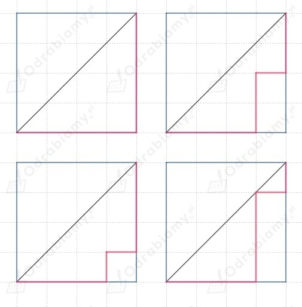
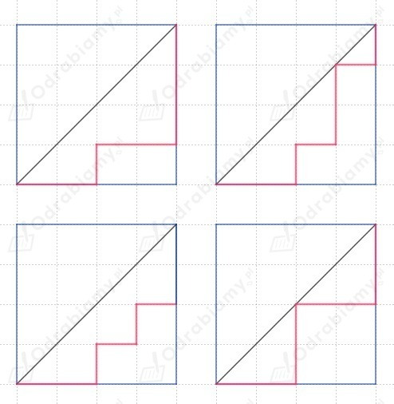
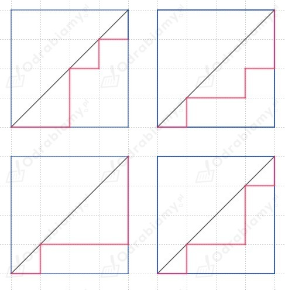
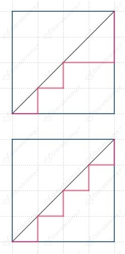

Rozważamy kwadrat o wymiarach 4 x 4.
Narysujemy wszystkie możliwe drogi z lewego dolnego rogu do górnego prawego rogu
w kwadracie z siatką całkowitą.




Z ciągu liczb Catalana dostajemy:
Dla kwadratu 4 x 4 istnieje 14 możliwych dróg, zatem